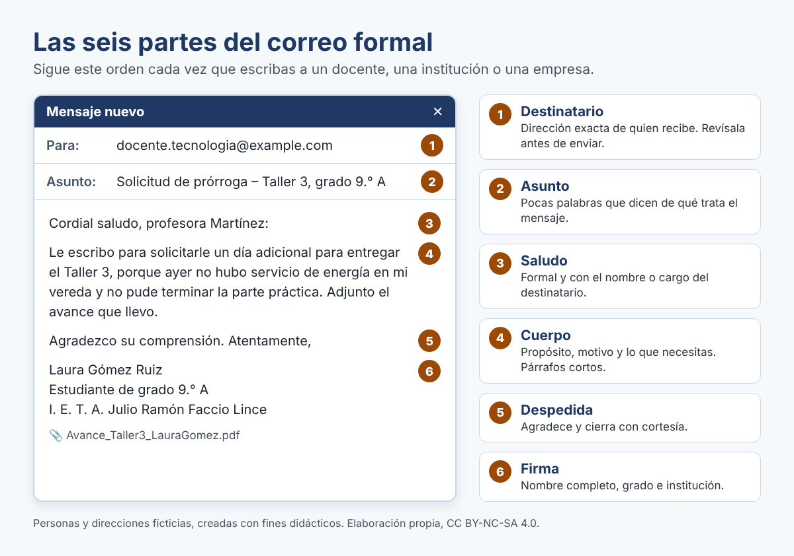
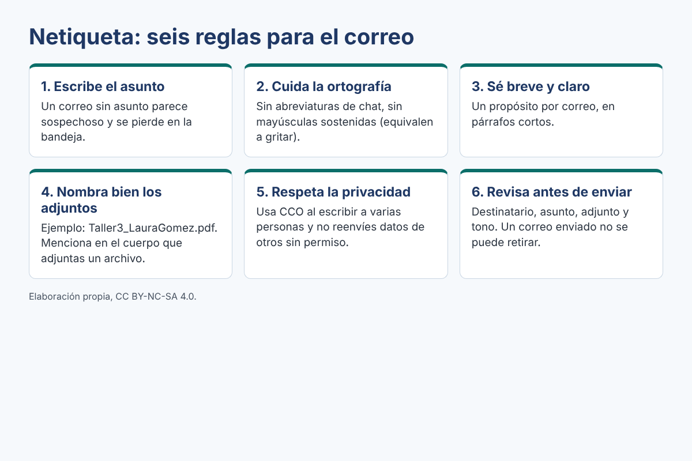

El correo electrónico
Propósito de este momento: comprender la estructura del correo formal, las normas de netiqueta y el manejo seguro de archivos adjuntos. Tiempo: 40 minutos, trabajo individual.
¿Qué es el correo electrónico?
Es un servicio que permite enviar y recibir mensajes escritos, con archivos adjuntos, a través de internet. A diferencia del chat, el correo deja un registro ordenado, se usa en contextos académicos y laborales, y se espera que tenga una estructura completa.
La dirección de correo
Toda dirección tiene tres partes: usuario, el símbolo @ (arroba) y el dominio del proveedor o de la institución. Por ejemplo, en laura.gomez@example.com, «laura.gomez» es el usuario y «example.com» es el dominio.
Para estudiar o trabajar, crea una dirección seria, con tu nombre y apellido. Evita direcciones como lamasbonita2010@… o elcrack_09@…: dicen mucho de ti antes de que el destinatario lea tu mensaje.
¿Cuándo usar chat y cuándo usar correo?
| Chat o mensajería | Correo electrónico |
|---|---|
| Conversaciones rápidas con amigos y familia. | Comunicaciones con docentes, instituciones y empresas. |
| Tono cercano, mensajes cortos, emojis. | Tono respetuoso, mensaje completo y ordenado. |
| Respuesta inmediata. | Respuesta en horario y días hábiles. |
Las seis partes del correo formal

Expresiones útiles
| Parte | Expresiones adecuadas | Evita |
|---|---|---|
| Asunto | «Entrega del Taller 3 – Grado 9.° A»; «Solicitud de permiso – 15 de mayo» | Dejarlo vacío; «hola»; «urgente!!!» |
| Saludo | «Cordial saludo, profesora Martínez:»; «Buenos días, señor rector:» | «Hola profe»; «Qué más» |
| Cuerpo | «Le escribo para…»; «Le solicito…»; «Adjunto…» | Abreviaturas (xq, tmb, q); mayúsculas sostenidas |
| Despedida | «Agradezco su atención.»; «Quedo atento a su respuesta.»; «Atentamente,» | «Chao»; «bye»; «besos» |
| Firma | Nombre completo, grado e institución | Solo un apodo o ninguna firma |
Compara: antes y después
Mueve la barra para comparar el mismo mensaje en dos versiones. Observa qué cambia en el saludo, el tono, la ortografía y la firma. Luego responde: ¿qué tres cambios hacen que el segundo mensaje sea más claro y respetuoso?
Mueve la barra para comparar el mismo mensaje en dos versiones. Observa qué cambia en el saludo, el tono, la ortografía y la firma. Luego responde: ¿qué tres cambios hacen que el segundo mensaje sea más claro y respetuoso?
","isScorm":0,"textButtonScorm":"Guardar la puntuación","repeatActivity":true,"itinerary":{"showClue":false,"clueGame":"","percentageClue":40,"showCodeAccess":false,"codeAccess":"","messageCodeAccess":""},"weighted":100,"cardsGame":[{"url":"../content/resources/antes.png","author":"Jorge Guillermo Federico Castro Cervantes (CC BY-NC-SA 4.0)","alt":"Captura de un chat informal enviado al docente: «profe no pude hacer el taller xq se fue la luz. me da mas tiempo??», enviado a las 10:47 p. m., sin saludo, sin firma y con abreviaturas.","eText":"Antes: mensaje informal enviado por chat","urlBk":"../content/resources/despues.png","authorBk":"Jorge Guillermo Federico Castro Cervantes (CC BY-NC-SA 4.0)","altBk":"Correo formal de ejemplo con destinatario, asunto «Solicitud de prórroga – Taller 3, grado 9.° A», saludo, cuerpo, despedida, firma completa y archivo adjunto.","eTextBk":"Después: correo formal con sus seis partes","description":"Compara el mensaje informal con el correo formal. Desliza la barra hacia la izquierda y hacia la derecha.","position":"50","vertical":false}],"textAfter":"","version":2,"evaluation":false,"evaluationID":"45038d44-6d95-4eea-8981-2f5f0cbd6628","id":"idevice-1792567051263-1sesbb1lo","msgs":{"msgSubmit":"Enviar","msgClue":"¡Genial! La pista es:","msgCodeAccess":"Código de acceso","msgInformationLooking":"¡Genial! La información que estaba buscando","msgMinimize":"Minimizar","msgMaximize":"Maximizar","msgFullScreen":"Pantalla Completa","msgExitFullScreen":"Salir del modo pantalla completa","msgNoImage":"Pregunta sin imágenes","msgAuthor":"Autoría","msgAfterImage":"Imagen (después)","msgBeforeImage":"Imagen (antes)","msgNext":"Siguiente","msgPrevious":"Anterior","msgImage":"Imagen","msgScoreScorm":"La puntuación no se puede guardar porque esta página no forma parte de un paquete SCORM.","msgQuestion":"Pregunta","msgOnlySaveScore":"¡Solo puede guardar la puntuación una vez!","msgOnlySave":"Solo puede guardar una vez","msgInformation":"Información","msgOnlySaveAuto":"Su puntuación se guardará después de cada pregunta. Solo puede jugar una vez.","msgSaveAuto":"Su puntuación se guardará automáticamente después de cada pregunta.","msgYouScore":"Su puntuación","msgEndGameScore":"Inicia la actividad antes de guardar tu puntuación.","msgSeveralScore":"Puede guardar la puntuación tantas veces como quiera","msgYouLastScore":"La última puntuación guardada es","msgActityComply":"Ya ha realizado esta actividad.","msgPlaySeveralTimes":"Puede realizar esta actividad cuantas veces quiera","msgUncompletedActivity":"Actividad no completada","msgSuccessfulActivity":"Actividad superada. Puntuación: %s","msgUnsuccessfulActivity":"Actividad no superada. Puntuación: %s","msgTypeGame":"Antes/Después","msgPlayStart":"Pulsa aquí para jugar"}}

Netiqueta: normas de cortesía en la red
La netiqueta es el conjunto de normas de cortesía y respeto para comunicarse en internet. Aplicarla protege tu imagen y la de los demás.

Archivos adjuntos y seguridad básica
Cómo adjuntar un archivo
- Guarda el archivo con un nombre claro:
Taller3_LauraGomez.pdf. - En tu correo, haz clic en el ícono del clip («Adjuntar archivos») y selecciónalo.
- Espera a que termine de cargar antes de enviar.
- Menciona en el cuerpo del mensaje que adjuntas un archivo y qué contiene.
Seguridad básica
- No abras adjuntos ni enlaces de remitentes que no conoces.
- Desconfía de mensajes que piden tu contraseña o datos personales con urgencia: es una señal de suplantación (phishing).
- Cierra tu sesión al usar un computador compartido.
- Usa una contraseña larga y no la compartas.
Para estudiar sin conexión: descarga la guía en PDF que aparece a continuación. Contiene la estructura del correo, las reglas de netiqueta y una plantilla para tu correo.